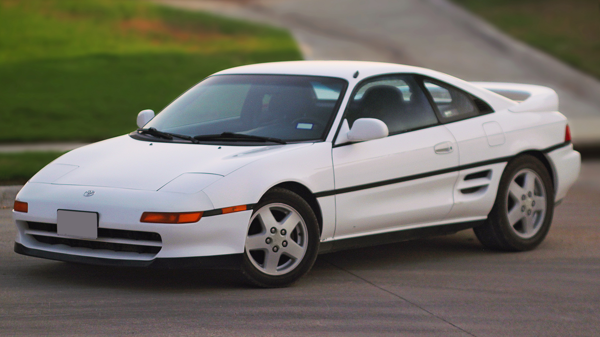

The greatest car of the 1980s
Notice that space in this car doesn't really matter. The car is more than enough to accommodate both belongings and people.
Check it out!!! 
Here are a list of reasons why the Toyota MR2 is so great
As shown by the pictures, you can tell that this car is the lastest, and greatest, automobile technology.
The Toyota MR2 is a piece of Japanese history, as it was the first Japanese mid-engine car to by produced.
The Toyota MR2 is also a speedster, clocking in at around 60 Miles Per Hour!
Thats a total of 60 Miles every 60 Minutes!
Thats like a mile a minute!
| Company | Car | Speed |
|---|---|---|
| Toyota | MR2 | 60mph |
| Lamborghini | Huracan | Slower than the MR2 |
| Ford | F150 | This is a truck |
| Smart | Water | 50 |